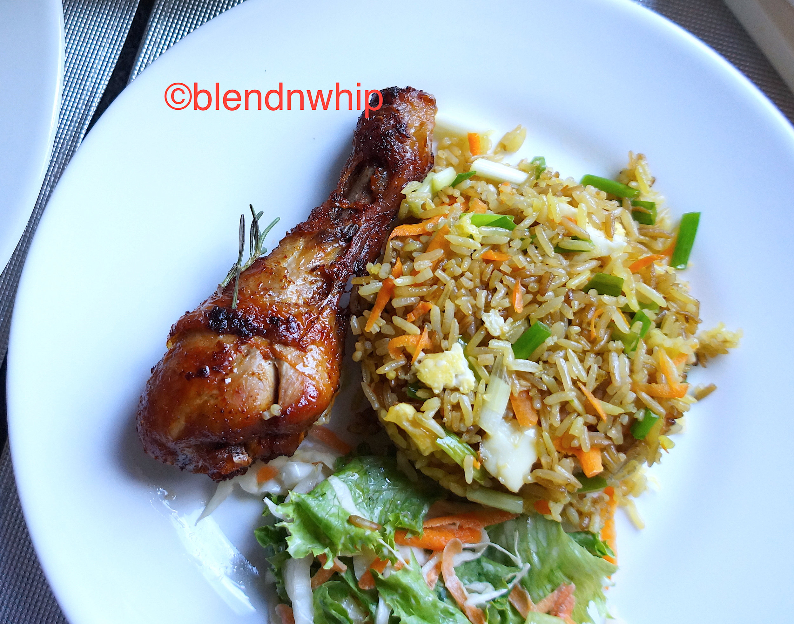

Fried Rice

Description
Fried Rice is a delicious dish made with stir-fried rice, vegetables, and spices. It is a popular meal in Ghana and across the world.
Ingredients
- 2 cups of rice
- 1 cup of mixed vegetables (carrots, peas, and sweet corn)
- 2 eggs (optional)
- 1/2 cup of diced chicken or beef
- 2 tablespoons of soy sauce
- 2 tablespoons of vegetable oil
- Salt and pepper to taste
Steps
- Cook the rice and set aside to cool.
- Heat oil in a pan and fry the diced chicken or beef until golden brown.
- Add vegetables and stir-fry for 2-3 minutes.
- Push the vegetables to one side and scramble the eggs (if using).
- Mix the rice with soy sauce, salt, and pepper, then add to the pan.
- Stir everything together and cook for another 5 minutes.
- Serve hot and enjoy!
Back to Home